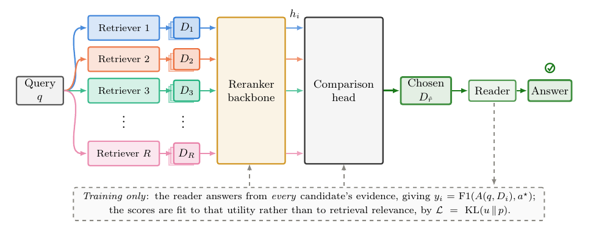
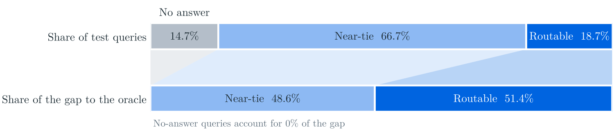

目录 · 6 节
1选择的是本次取回的段落组2怎样训练它选择有助于回答的内容3摘要的 28%，对应哪些问题？4不记检索器身份，换组件时会怎样59% 额外开销没有包含什么6值得先试的是答案监督，不是更复杂的比较网络同一个问题交给不同 检索器，返回的段落对最终答案的帮助可能不同。RAGCompass（从各路取回结果中选一组的路由模型）先运行各路检索，再让一个经过训练的 reranker 比较这些结果，选择一组交给大模型作答。在全部测试问题上，答案 F1 比最佳固定 检索器 高 2.28 个百分点。摘要中的相对提升 28% 来自筛选后的问题集合，不能当作全量收益。它更适合已有多路检索、希望改善答案质量的系统，不是用来省掉其他检索器的前置路由。
选择的是本次取回的段落组
问答系统通常固定一个检索器，取回段落后交给 reader。不同检索器擅长的匹配方式不同。同一道题，关键词检索可能找到直接答案，另一个检索器也可能找到更完整的材料；单看平均指标接近，并不代表每道题返回的内容一样有用。
用一个示意问题看区别：用户问某位作家的出生地。一组段落有生平介绍，包含出生地；另一组主要讨论作品。两组都与这位作家相关，能否帮助 reader 回答这道题，却不只取决于主题是否相关。这里的段落组，指一个检索器为本次问题返回的全部候选段落。
在本文实验设置下，RAGCompass 在每次选择之前，先让五个检索器各取回五篇段落。候选分别来自稠密检索、BM25、SPLADE-v3、ColBERTv2 和 HippoRAG2，覆盖不同检索方式。路由模型比较的是五组实际内容，最终选择其中一组。它没有把所有段落合并为一份上下文，也没有在检索发生前预测该调用哪一路。

这解释了它与只看 query 特征的路由有什么区别。后者根据问题文字或检索分数等信号预测哪一路更好；RAGCompass 已经拿到本次结果，再评价这些段落对回答问题的价值。新增检索器也能提供一组段落作为输入，不需要先给它学习一个固定身份标签。
怎样训练它选择有助于回答的内容
训练时可以访问标准答案。对同一个问题，作者让固定 reader 分别读取每一路的段落，各生成一个答案，再与标准答案比较，得到各路答案 F1。论文把这个分数叫 utility，即这一组段落实际支持回答的效果。
其中 q 是问题，D_i 是第 i 路的段落组，A 是 reader，a* 是标准答案。对前面的示意题，只有与作家相关但缺少出生地的段落组，仍可能产生较差答案。训练目标因此来自每组内容产生的答案，而不只来自人工标注段落的相关性。
打分器以 Qwen3-Reranker-0.6B 为主干，每次输入问题和其中一组段落。五组各自前向计算，但共用模型参数。模型在路由指令下输出 yes 的 logit，作为这组的分数。
训练时，各路答案 F1 先除以温度参数 τ，再一起做 softmax，得到目标权重 u。各路模型分数也做 softmax，得到选择概率 p。训练最小化两份分布的 KL 散度：
答案 F1 更高的组获得更高目标权重；温度越低，权重越集中于高 F1 的组。模型据此学习怎样在各组之间分配选择概率。
仅使用这个打分器，就能选择分数最高的一组。完整版本另加一个两层 Transformer 比较网络，把各组的隐藏表示放在一起处理，输出每组最终分数。它能在压成单个分数之前比较表示。作者先训练打分器，再冻结它训练比较网络；两部分都不为某个检索器单独保存专属参数。
这里最容易混淆的是训练和使用的成本。训练标签需要 reader 对每一路都作答。实际使用时，路由模型只读问题与已取回的段落，没有标准答案，也不先生成五份答案来挑。选出一组后，reader 才生成一次答案。 Hoot 说

训练标签记录各路实际答得怎样。使用时模型预测哪组更有用；真实答案不可见，选择不再调用reader逐路试答。各路检索仍都要运行。
出处
论文§3.1–3.2、图2、附录K摘要的 28%，对应哪些问题？
作者在四个问答数据集上研究这种选择：Natural Questions、MuSiQue、HotpotQA 和 2WikiMultihopQA，兼有单跳与多跳问题。实验采用固定的 Llama-3.1-8B-Instruct 作为 reader。主表只纳入最优与次优检索器的答案 F1 相差至少 0.05 的问题，使选对哪一路确实有可测差别。
这个筛选用到了标准答案和各路生成结果，属于离线训练、评测的数据选择，不是线上要求用户提供答案。入选问题占未筛选测试集的 18.7%。主结果表 2 中，各模型在这个相同子集上比较。
| 设置 | 答案 F1 |
|---|---|
| 最佳固定检索器 | 0.2782 |
| RRF 结果融合 | 0.3002 |
| MoR，本文使用固定权重的融合版本 | 0.3203 |
| 只用训练后的打分器 | 0.3412 |
| 打分器加比较网络 | 0.3552 |
| 每道题事后选择最好结果的上界 | 0.7508 |
完整版本比固定检索器增加 7.70 个百分点，论文将相对增幅写作 28%。打分器已经提供大部分改进，比较网络再增加 1.4 个百分点。上界需要知道每组最后答得怎样，只用于评价还有多少选择空间，不能直接作为可部署的方法。

回到全部测试问题，收益降为 2.28 个百分点。最佳固定对照也从 SPLADE-v3 变成 HippoRAG2，所以这不只是把主表收益按样本占比缩放。部署价值应看全量问题上的效果，而不是仅看最有区分空间的那部分。
另一个实验更直接检查监督信号：固定样本、比较网络和评测方式，仅把训练目标从答案效果换成正确段落的 nDCG。答案 F1 从 0.3552 降为 0.3341。它支持把下游答案作为路由目标；与只看 query 的模型比较时，模型容量和结构也不同，不能把全部分差都归因于是否读了段落。
不记检索器身份，换组件时会怎样
共享内容打分让新检索器的结果仍能被输入模型，但“能打分”和“仍然选得准”是两件事。作者把某个检索器及其标签从训练中完全拿掉，测试时再把它放回候选，检查模型能否利用未见过的检索方式。
这个实验中，不带身份参数的完整模型，相对五路都参与训练的版本，F1 损失为 0.16–1.17 个百分点。给比较网络加上专属身份 embedding 后，部分留出设置明显恶化。这为共享内容表示提供了依据，不是对任意新增检索器的质量保证。
换语料的实验则把一个数据集的问题和语料从路由训练中排除，再在该数据集测试。保留比例是未见语料时超过固定检索器的增益，除以同分布训练时的增益。HotpotQA 保留 103%，2Wiki 保留 84%，MuSiQue 保留 49%；Natural Questions 原有收益就很小。收益保留率在这些语料上差异很大。
reader 变化只测了一次替换：从生成标签时的 Llama 换成 Qwen2.5-7B-Instruct，保留了原有优势的 71%±2%。两种 reader 分别以各自的最佳固定检索器为对照。这次替换保留了部分收益，但没有单独分离段落质量与 reader 配合的影响。实际升级 reader 后，仍要重新测选择效果。本文比较的三种只看 query 的路由基线，均为作者重实现，部分模型更小、设置不同；MoR 也用固定权重，结果只适用于这些对照版本。
3.9% 额外开销没有包含什么
论文在单张 L40S、一个 batch 设置下，测得路由决策耗时 0.222 秒，单检索器取回并作答的流程为 5.687 秒，前者约为后者的 3.9%。这笔账覆盖读段落并选择的路由计算，没有包含从一个检索器扩成五个检索器的额外取回成本。
各路检索可以并行，最终生成也仍然只有一次，但并行不等于没有计算、索引和服务资源开销。已经有多路取回的系统与原本只跑一路的系统，增加这套选择的成本会不同。论文还报告，制作训练标签需要让 reader 对全部候选结果分别作答，这是一次明显的离线投入。
因此，工程比较要同时记录多路取回、reranker 前向和最终生成，而不能只把路由的 0.222 秒加到原系统延迟上，就当作迁移完成后的总账。3.9% 是本文设备与设置中的决策开销比例。
值得先试的是答案监督，不是更复杂的比较网络
已有多路检索的团队，可以在一批有标准答案的问题上，让固定 reader 分别使用各路结果作答，检查不同结果之间是否确实有答案差异。用这些标签训练共享打分器，再与最佳固定检索器和现有融合方案比较全量问题效果。主表中打分器已取得大部分收益，因此复杂比较网络可以放在后面评估。
测试时还要留出新增检索器或新语料，观察选择是否仍然有用，并把各类请求上的质量与成本一起记录。这些是依据论文的试用建议，不是已经在其他系统验证过的结果。RAGCompass 的实用判断是：已经拿到多路结果时，直接检查它们能否帮助回答，比仅给检索器一个固定身份更有机会适应变化。
| 维度 | 判断与理由 |
|---|---|
| 问题重要性 | 高。不同取回结果对同一问题的答案价值确实不同。 |
| 方法创新性 | 中。把段落组选择交给答案监督的共享 reranker。 |
| 实验证据 | 中。筛选子集结果强于全量收益，迁移表现随数据集变化。 |
| 工程成本 | 中高。需多路取回、标签生成和模型训练，在线只生成一次答案。 |
| 是否值得尝试 | 有条件。适合已有多路结果且全量问答收益能覆盖额外成本的系统。 |
读完这篇，你觉得
夜读鸮记下了，谢谢你的反馈。
点一下即可，无需登录；再点一次撤回。只统计匿名次数，不记录你是谁。
讨论
欢迎补充实验细节、复现经验或不同看法。需 GitHub 登录。
正在加载讨论…